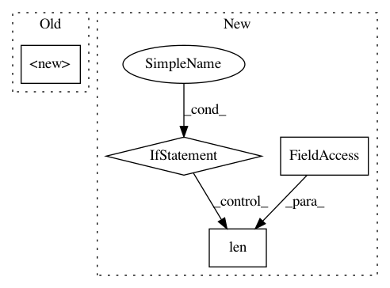

1b45e3a304f9d2479a836b82d889f0e19183faf6,src/plugin.py,EmbeddingRegularizer,__init__,#EmbeddingRegularizer#,8
Before Change
""" Perform word embedding regularization training for ASR"""
def __init__(self, tokenizer, dec_dim, enable, src, distance, weight, fuse, temperature,
freeze=True, fuse_normalize=False, dropout=0.0):
super().__init__()
self.enable = enable
if enable:
pretrained_emb = torch.FloatTensor(load_embedding(tokenizer,src))
//pretrained_emb = nn.functional.normalize(pretrained_emb,dim=-1) // ToDo : Check impact on old version
After Change
vocab_size, emb_dim = pretrained_emb.shape
self.dim = emb_dim
if bert is not None:
if not isinstance(bert, (tuple, list)) or len(bert) != 2:
raise ValueError("`bert` should be a tuple/list of config and fine-tuned model "
"such as (\"bert-base-uncased\", \"fine-tuned-model.pth\").")
self.emb_table = BertEmbeddingPredictor(
bert[0], text_encoder, bert[1])
else:
self.emb_table = nn.Embedding.from_pretrained(
pretrained_emb, freeze=freeze, padding_idx=0)
self.emb_net = nn.Sequential(nn.Linear(dec_dim, (emb_dim+dec_dim)//2),
nn.ReLU(),
nn.Linear((emb_dim+dec_dim)//2, emb_dim))
self.weight = weight
In pattern: SUPERPATTERN
Frequency: 3
Non-data size: 4
Instances
Project Name: Alexander-H-Liu/End-to-end-ASR-Pytorch
Commit Name: 1b45e3a304f9d2479a836b82d889f0e19183faf6
Time: 2019-10-13
Author: windqaq@gmail.com
File Name: src/plugin.py
Class Name: EmbeddingRegularizer
Method Name: __init__
Project Name: rtqichen/torchdiffeq
Commit Name: b914816142ae2776f531be1c0b49812a0bfde91f
Time: 2020-08-04
Author: 33688385+patrick-kidger@users.noreply.github.com
File Name: torchdiffeq/_impl/adams.py
Class Name: VariableCoefficientAdamsBashforth
Method Name: __init__
Project Name: GPflow/GPflow
Commit Name: f31a914bd38b00affc978d7ef1834e1303af5b4c
Time: 2018-09-20
Author: art.art.v@gmail.com
File Name: gpflow/models/model.py
Class Name: GPModel
Method Name: __init__